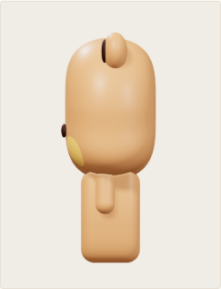

VOLUME REFERENCE / FIRST REVIEW
让头部和身体真正鼓起来。
中性站姿 · 正交投影 · 统一比例与光线 · 无动作形变
卡牌观察范围：左右各 20°侧面、背面与 45° 视图用于设定审核；站位、道具和剧情按单张卡牌另行设计。
已确认的正面依据
头形与头身尺寸以 R05 共用体型为约束；材质、颜色及脸红边界参考已确认的软陶正面。下方三维试稿的新厚度与背面设计仍待审核。
先看侧面：R01 与本轮 R02
同样的正交观察与中性灯光，比较额头、后脑、胸腹和背部的曲面。

灰模检查：只看体块和曲面
统一灰色与固定光线，观察额头、侧颊、后脑、胸腹和背部的连续转折。
YI-ER / SHARED BODY VOLUME
一二 · 六视图参考
重新构建额头、侧颊和后脑的连续曲面；胸腹与腿根融合，侧背体积待审核。
沿用基准 共用头身、眼睛与圆润 W 形嘴；保留深色耳朵、颈带、领结及独立鞋子。
本次提案 头部前后厚度、背面弧度、耳根厚度、肩部闭合和鞋后跟，均需通过本轮审核。
背面约定 暂采用连续、无额外装饰的背面；未新增尾巴或其他辨识元素，待确认。
BU-BU / SHARED BODY VOLUME
布布 · 六视图参考
与一二共用基础体积；通过肤色、内耳、脸红和配饰形成角色区分。
沿用基准 共用头身、手部、眼睛与圆润 W 形嘴；暖棕肤色、深色内耳、黄色脸红。
本次提案 头部前后厚度、背面弧度、耳根厚度和肩部闭合，均需通过本轮审核。
背面约定 暂采用连续、无额外装饰的背面；脚部保持同色，不添加鞋子，待确认。
这一轮重点看四处
01 / 头部厚度侧面是否像同一个角色，前后弧度是否自然。
02 / 20° 轮廓脸颊浅凹、下巴连续曲线和五官贴合是否保留。
03 / 耳朵与手肩连接是否自然，体积是否像嵌入整体的结构。
04 / 背面与脚部背部是否连贯，一二的鞋后跟与布布的同色脚是否合适。
当前数值是三维试稿的可复现参数，不是原作者发布的官方尺寸；通过审核后才升级为三维角色基准。